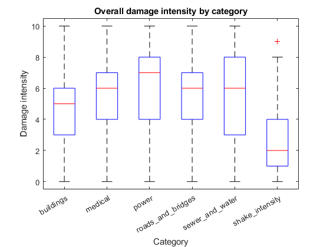
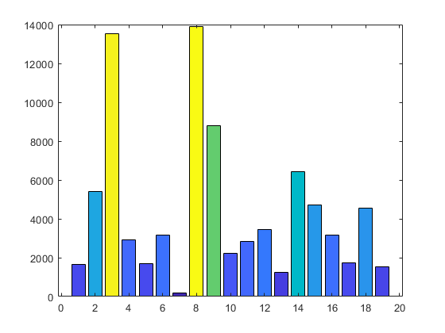

Contents
clear
load("MC1\dataFile.mat");
timetabl = table2timetable(mc1reportsdata);
timetabl = sortrows(timetabl);
damages = mc1reportsdata(:, ["medical", "sewer_and_water", "power", ...
"roads_and_bridges", "buildings", "shake_intensity"]);
types = damages.Properties.VariableNames;
types = categorical(types);
numAreas = 1:19;
prequake_index = timerange('2020-04-06 14:00:00', '2020-04-07 00:00:00');
mainshock_index = timerange('2020-04-08 07:00:00', '2020-04-09 00:00:00');
aftershock_index = timerange('2020-04-09 11:00:00', '2020-04-10 00:00:00');
earthquake_index = timerange('2020-04-06 14:00:00', '2020-04-10 00:00:00');
prequake_table = timetabl(prequake_index,:);
mainshock_table = timetabl(mainshock_index,:);
aftershock_table = timetabl(aftershock_index,:);
earthquake_table = timetabl(earthquake_index,:);
OVERALL DAMAGE ACROSS ALL CATEGORIES AND AREAS
boxplot(damages{:,:}, types);
title('Overall damage intensity by category')
xlabel('Category')
ylabel('Damage intensity')

NUMBER OF REPORTS TO APPROX. POPULATION SIZE FOR EACH NEIGHBORHOOD.
numReports = hist(timetabl{:,"location"},numAreas);
out = [numAreas; numReports];
b = bar(numAreas, numReports, 'FaceColor', 'flat');
b.CData = numReports / max(numReports);

TAKING A CLOSER LOOK AT THE SHAKE INTENSITY DURING FORESHOCK, MAINSHOCK AND AFTERSHOCK.
for i = 1:length(numAreas)
prequake_rows = prequake_table{:,"location"} == numAreas(i);
mainshock_rows = mainshock_table{:,"location"} == numAreas(i);
aftershock_rows = aftershock_table{:,"location"} == numAreas(i);
earthquake_rows = earthquake_table{:,'location'} == numAreas(i);
rolling_prequake_mean{i} = retime(prequake_table(prequake_rows,"shake_intensity"), "hourly", "mean");
rolling_prequake_mean{i}.location = repmat(numAreas(i), size(rolling_prequake_mean{i},1),1);
rolling_mainshock_mean{i} = retime(mainshock_table(mainshock_rows,"shake_intensity"), "hourly", "mean");
rolling_aftershock_mean{i} = retime(aftershock_table(aftershock_rows,"shake_intensity"), "hourly", "mean");
rolling_aftershock_mean{i}.location = repmat(numAreas(i), size(rolling_aftershock_mean{i},1),1);
rolling_earthquake_mean{i} = retime(earthquake_table(earthquake_rows,"shake_intensity"), "hourly", "mean");
end
for j = 1 : length(numAreas)
rolling_prequake_mean{j} = rmmissing(rolling_prequake_mean{j});
rolling_mainshock_mean{j} = rmmissing(rolling_mainshock_mean{j});
rolling_aftershock_mean{j} = rmmissing(rolling_aftershock_mean{j});
rolling_earthquake_mean{j} = rmmissing(rolling_earthquake_mean{j});
end
plotColors = jet(7);
cmap = colormap(prism(7));
subplot(3,1,1);
hold on
for k = 1:7
s1 = stem(rolling_earthquake_mean{k}, "shake_intensity",'Color', cmap(k,:), 'Marker','o','LineStyle','-.' , 'LineWidth', 1);
end
hold off
legend show
ylim([0 6.7])
subplot(3,1,2);
hold on
for k = 8:13
stem(rolling_earthquake_mean{k}, "shake_intensity", 'Color', plotColors(k-7,:), 'Marker','o', 'LineStyle','-.', 'LineWidth',1);
end
hold off
legend show
ylim([0 6])
subplot(3,1,3);
hold on
for k = 14:19
stem(rolling_earthquake_mean{k}, "shake_intensity", 'Color', plotColors(k-12,:), 'Marker','o', 'LineStyle','-.','LineWidth',1);
end
hold off
legend show
ylim([0 6])

TAKING A CLOSER LOOK AT BUILDING, POWER ETC DAMAGES DURING PRESHOCK, MAINSHOCK AND AFTERSHOCK FOR THE MOST DAMAGED AREAS.
mostDamaged = [3, 4, 7, 12];
for i = 1:length(numAreas)
earthquake_rows = earthquake_table{:,'location'} == numAreas(i);
rolling_earthquake_mean{i} = retime(earthquake_table(earthquake_rows,1:5), "daily", "mean");
end
for j = 1 : length(numAreas)
end
figure(1)
for k = 1:19
subplot(5,4, k);
b(:,k) = bar(rolling_earthquake_mean{:,k}.time, rolling_earthquake_mean{:,k}{:,1:5});
ylim([5 10])
end
sgtitle('Daily mean of damage reports >5')
Unable to perform assignment because the size of the left side is 1-by-1 and the size of the right side is 1-by-5.
Error in project (line 128)
b(:,k) = bar(rolling_earthquake_mean{:,k}.time, rolling_earthquake_mean{:,k}{:,1:5});
oldTown = timetabl.location == 3;
SafeTown = timetabl.location == 4;
WilsonForest = timetabl.location == 7;
ScenicVista = timetabl.location == 8;
oldTown = timetabl(oldTown, :);
SafeTown = timetabl(SafeTown, :);
WilsonForest = timetabl(WilsonForest, :);
ScenicVista = timetabl(ScenicVista, :);
[~, dayCol] = weekday(oldTown.time);
[~, dayCol2] = weekday(SafeTown.time);
[~, dayCol3] = weekday(WilsonForest.time);
[~, dayCol4] = weekday(ScenicVista.time);
subplot(2,2,1)
boxplot(oldTown.shake_intensity,dayCol);
title("Old Town - Daily Shake Intensity")
subplot(2,2,2);
boxplot(SafeTown.shake_intensity,dayCol2);
title("Safe Town - Daily Shake Intensity")
subplot(2,2,3);
boxplot(WilsonForest.shake_intensity,dayCol3);
title("Wilson Forest - Daily Shake Intensity")
subplot(2,2,4);
boxplot(ScenicVista.shake_intensity,dayCol4);
title("Scenic Vista - Daily Shake Intensity")